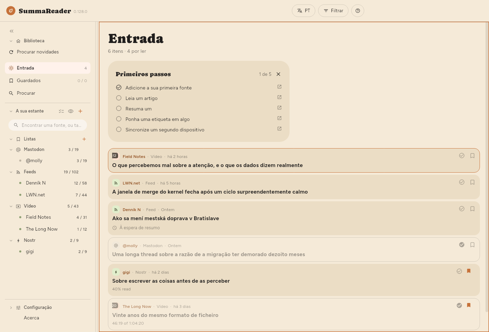
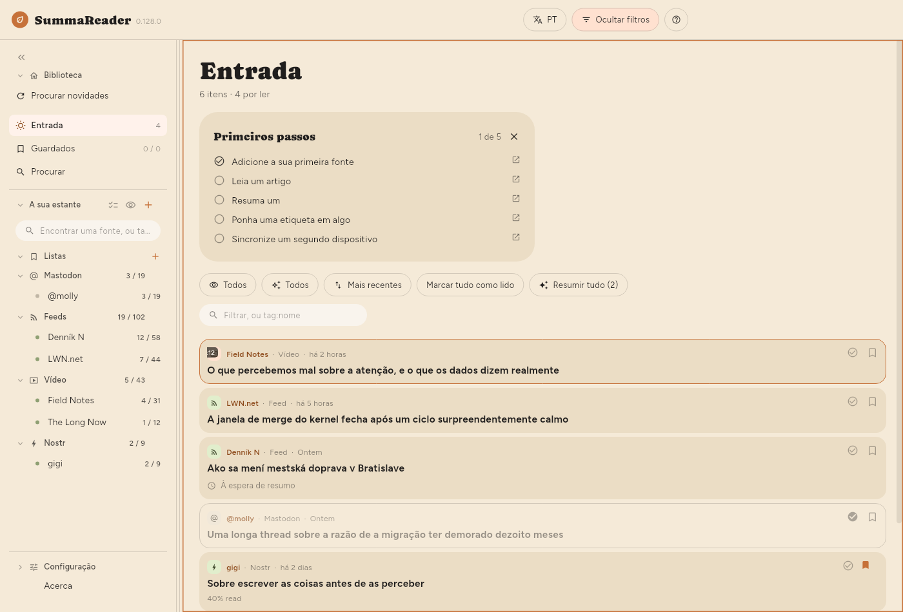

← Para começar · Índice · Ler →
A janela

A barra superior
| Controlo | O que faz |
|---|---|
| EN | O idioma da interface |
| Filtrar | Mostra e esconde o painel de filtros |
| ? | Ajuda sobre o que está no ecrã |
Filtrar aparece enquanto a lista está no ecrã — o que inclui ler um artigo ao lado dela. O botão Filtrar fica preenchido e passa a dizer Filtrado sempre que algo está a reduzir a lista, por isso uma lista que mostra só uma parte de si diz sempre porquê. Num telemóvel, ☰ abre a estante e Filtrar é o botão ao lado de ?.
A estante
Do lado esquerdo, de cima para baixo: Biblioteca com Procurar novidades, Entrada, Guardados e Procurar, depois A sua estante com as suas Listas e os seus feeds agrupados por tipo e, no fundo, Configuração. Cada feed mostra por ler / total; cada lista mostra o que contém. Num telemóvel, a estante é uma gaveta que se abre com ☰.
- Procurar novidades vai buscar todas as fontes agora.
- A caixa no topo reduz a estante e mais nada: parte do nome de um feed, ou
tag:e parte de uma etiqueta. Uma parte chega, por issotag:gamencontragamingeretro-gaming— e uma palavra curta apanha muito, já quetag:aitambém encontra um feed com a etiquetaretail, e!tag:aiesconde-o. A caixa de texto do painel de filtros quer a etiqueta inteira. - Clique num feed para ver só esse feed.
- Clique numa lista para ver o que está nela — ver Guardar coisas.
- Selecionar vários (as marcas de visto ao lado de A sua estante), ou um toque longo numa linha, mostra uma roda dentada em cada feed. A roda dentada abre o painel próprio desse feed — ver Gerir fontes.
- O olho ao lado de + esconde todos os feeds sem nada à espera.
- « reduz a estante a uma faixa de ícones.
bfaz o mesmo.
O painel de filtros
Prima Filtrar. Tudo o que decide o que a lista mostra está aqui, e o painel está fechado por omissão para que a primeira coisa por baixo do título seja o primeiro artigo.


| Controlo | O que faz |
|---|---|
| Por ler / Lidos / Todos | Que itens mostrar |
| Todos / Resumidos / Por resumir | Se existe um resumo |
| Mais recentes | Ordenação — prima para percorrer seis |
| Marcar tudo como lido | Marca tudo o que o filtro abrange |
| Resumir tudo | Resume tudo o que o filtro abrange |
| Chips de tipo | Vídeos, feeds, publicações — clique para reduzir |
| A caixa de texto | Procura uma palavra no título, na fonte ou no resumo, ou tag:nome |
A ordenação percorre: Mais recentes → Mais antigos → Título A–Z → Título Z–A → Fonte A–Z → Fonte Z–A, e volta ao início.
O filtro de lidos, o filtro de resumidos e a ordenação são lembrados entre arranques. A escolha de um feed não é — isso é navegação, e abrir numa biblioteca reduzida a um feed que escolheu na semana passada parece uma aplicação vazia.
As contagens por baixo de "Entrada"
A mostrar 18 de 5,878 · 52 por ler · 812 por resumir
- A mostrar só aparece quando um filtro está a reduzir a lista, e conta as linhas que estão realmente no ecrã.
- por resumir é o mesmo número do botão Resumir, e é o que premir esse botão faria.
O aspeto da lista
| Definição | Onde |
|---|---|
| Tamanho do texto | Configuração › Básico › Aspeto › Texto › Tamanho do texto |
| Densidade da lista | Configuração › Básico › Aspeto › Lista › Densidade da lista |
| Mostrar a lista Primeiros passos | Configuração › Básico › Aspeto › Lista › Mostrar a lista Primeiros passos |
| Resumo na lista | Configuração › Básico › Aspeto › Lista › Resumo na lista |
| Miniaturas | Configuração › Básico › Aspeto › Lista › Miniaturas |
| Entrelinha, Largura da coluna | Configuração › Básico › Aspeto › Artigo |
| Onde fica o artigo | Configuração › Básico › Aspeto › Disposição |
| Agrupar por fonte | Configuração › Básico › Aspeto › Lista › Agrupar por fonte |
Densidade da lista decide quanto de cada item a lista desenha:
| Resumo | Título | Imagem | |
|---|---|---|---|
| Confortável | visível | sem limite de linhas | grande |
| Compacta (por omissão) | — | duas linhas | pequena |
| Densa | — | uma linha | nenhuma |
Com Confortável escolhida, Resumo na lista (Configuração › Básico › Aspeto › Lista › Resumo na lista) define quanto de cada resumo uma linha mostra: 2 linhas, 4 linhas ou o Resumo completo (por omissão). Um artigo ainda sem resumo mostra no mesmo lugar, mais esbatido e com o mesmo limite, o seu início: a descrição própria da fonte ou, se não houver, as primeiras palavras do texto do artigo. A linha só aparece com Confortável, porque Compacta e Densa não mostram resumo.
Miniaturas: Imagem mostra a imagem de cada artigo em vez de um ícone de tipo. É a única das três opções que custa alguma coisa: as imagens são transferidas algumas de cada vez para as linhas no ecrã, por isso uma longa lista de artigos em atraso vai-se preenchendo aos poucos e não de uma vez. A densidade Densa ignora a definição — uma imagem tem três linhas de altura, o que não é denso.